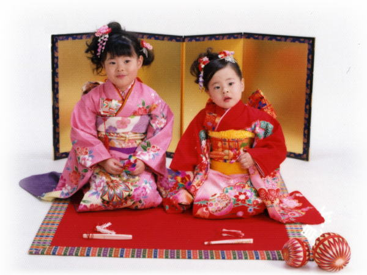
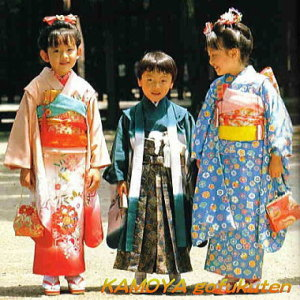
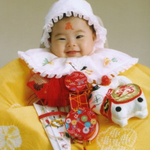
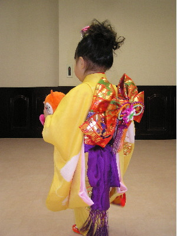

| かもや呉服店 【別館】子供の着物 七五三晴れ着館 |
|
|
| 備前岡山、桃太郎の国より全国へ、身近な着物や浴衣をお
届けします！ |
|
|
|  |
お子様といえ、ものごごろついてから初めて自分の国の晴れ着を着る機会です。
まるでお人形のように着飾った幼い日の記憶は、親の愛とともに永く心に残るでしょう。 |
|
かもや呉服店では、七五三の様々な小物を取り揃えております。
今お持ちのお着物や小物を有効活用ができます、気軽にご相談ください。 |
|
かもや呉服店七五三販売の特徴
| 手軽な価格のフルセット販売 |
| お持ちの着物や小物を活かしたコーディネート |
| 小物を充実して不足分を補うコーディネート |
| ご予算内でお値打ち価格でより良いもをコーディネート |
十人十色のお手伝い |
| フレームが
ない場合はここをクリックしてください |
|
|
|
|

写真は七五三詣りのイメージになります。 |
| 七五三の祝いとは |
|
|
| 数え年３歳のお祝いを髪置きの祝
いと呼び、男女ともこの日から髪を伸ばすしきたりがありました。数え５歳（満４歳）の祝いは、男児の袴着の祝いとして定着しています。数え年７歳（満６
歳）になると、女の子は着物についている付け紐を除いて、帯を結ぶようになることを祝う、帯直し祝いを行いました。生活の基本的習慣がほぼ一人前に身につ
く頃だけに、就学前のけじめをつけさせる意義深い習慣として伝えられてきました。 |
|
| 七五三詣りの日取りについて |
|
|
| お祝いの日は１１月１５日という
習慣になっていますが、この日に限ったことはないので、その前後のお天気のよい日、家族の都合のよい日を選んで、お子様のお祝いの日にするとよいでしょ
う。 |
|
| コーディネートについて |
|
|
| 昔のしきたりでは、身につけるも
のや儀式の作法も随分と難しかったようですが、「子供の健やかな成長を祈る」本来の意味さえ大切にすれば、現代的な感覚でトータルコーディネートしても、
決しておかしなことはありません。子供らしい色や柄を選び、配色よく合わせていきます。 |
|
|

写真はお宮詣り着物になります。
REUSE(リユース)再使用
お宮参りの着物が使えます。

七五三(三歳)の着用の場合になります。
七五三の様々な小物を取り揃えております。
今お持ちのお着物や小物を有効活用しませんか
気軽にご相談ください。 |
| Ｑ1.宮参りの着物が使えないかなぁ |
| お宮参りの着物を直して、七五三の晴れ着(三歳)としてお召しになれま
す。7月から10月にかけて、お直しとお仕立が大変混み合いますので、余裕をもってお早めにお越しください。詳しくはこちら |
| Q2.手元にあるものを使いたい・・・ |
| せっかく持っているのに使わない手はない。持っているものを全てお持込
ください。年数が経ったものでも使えるものがございます。思い出が詰まったもの、自分が着た着物を娘に着させたい方にアドバイスとサポート。 |
| Ｑ3.他店で買ったものだけど・・・ |
| 都合によりお困りの方は、遠慮なくご相談ください。「当社・他社」の垣
根なく、お客様ひとりひとりに喜んでいただける事を楽しみにしております。何事にもお手伝いできることが本望です。誠心誠意ご要望にお応えさせていただき
ます。 |
| Ｑ4.破損や紛失してお困りの方へ |
| はこせこ・びら・懐剣などが破損、紛失することがありますが、七五三に
関して何事にも対応できるように、小物を充実させておりますので安心してご利用いただけます。 |
| Ｑ5.四つ身の二重揚げが着にくいと聞
いたのですが |
| 熟練職人の技(揚げ)ですから、だぶつくことがありません。二重揚げを
した四ツ身は、三歳から成長にあわせて揚げをとると五歳から七歳まで使っていただけますので経済的です。 |
|
|
|
| かもや呉服店【別館】 |
|
| 子供の着物 |
|
| 七五三晴れ着館 |
| フレームが
ない場合はクリック |
|
| かもや呉服店七五三販売の特徴 |
|
お持ちの着物や小物を活かしたコーディネート |
|
小物を充実して不足分を補うコーディネート |
|
ご予算内でお値打ち価格でより良いもをコーディネート |
|
| 十人十色の臨機応変に対応お手伝いさせていただきます。 |
|
| 通信販売について |
| 通信販売規約 |
| 個人情報について |
| お買い物ガイド |
| 店舗情報 |
| 営業案内 |
|
■通信販売
について
商品を実際に見ないで購入する通信販売となりますので、過剰に神経質な方は通信販売でのご購入をご遠慮ください。特に電話やメールでの商品の質問に対して
の回答には限界がありますので、細かく気にされる方は店舗までお越しいただいて実際の商品をご確認されることをお勧めいたします。
商品の性質やパソコンの環境によって色、柄等がお客様のイメージと異なる場合がご
ざいます。ご満足頂けない場合があるかと思いますが 十分ご理解いただけますようお願い申し上げます。
■画像について
商品の色柄を忠実に表現することに細心の注意を払っておりますが、パソコンの設定環境や画像の性質上、写真と現物と色の違いがございますことご了承下さい
ませ。イメージが違うなどのご返品はご遠慮願います。
■サイト情報の更新ついて
実店舗「(株)かもや呉服店」と本サイト、ショッピングモールにて並行販売しておりますため、時々ご注文頂いた商品について確保できないことがございますことあらかじめご了承下さい。そのような場合は、速やかにお客様にご連絡させて頂きます。
なお、確保できなかった商品について、他店への在庫確認や取り寄せなどのご要望についてはお応えできませんことご了承下さいませ。
在庫管理が、すべて手作業となり、リアルタイ
ムで管理できないため、サイト内の情報更新が遅れますこと深くお詫びを申し上げます。
■ご注文について
ご注文は、Eメール、FAXについては24時間ご注文を受け付けております。電話でのご注文の場合は、午前11時〜午後6時までが受付時間となります。ご
注文用紙は、ページ内の注文書をダウンロード又はプリントアウト(印刷)をしてご利用ください。
別サイトのショッピングモールについては、それぞれのショッピングカートをご利用ください。
■お支払いについて
お支払総額は、商品代金合計(税込)＋送料＋手数料になります。 |
■配送・送
料について
本サイトからは、おまかせ便・きっちり便・低価格便のご選択が可能ですが、ショッピングモールからのご注文については、おまかせ便のみのご利用となりま
す。
■海外発送について
日本国内外からのご注文で海外へ発送を希望される場合、EMSにて発送をさせて頂きます。EMSの送料については実費のご負担願います。詳しくは海外発送をご参考ください。日本国内対象「送料無料」サービスについては対象外となりますことご了承ください。
■返品・交換について
◇ご注文のキャンセルについて
配送前にご連絡を頂きました場合は、キャンセルをお受けいたします。配送後についてはお断りしたしております。
◇誤送、運送中の破損などの対応について、商品の品質には万全を期しおりますが、万一商品が破損・汚損していた場合、またはご注文と異なる場合は、すぐに
交換・返品させていただきます。商品到着後７日以内に下記連絡先までご連絡ください。返送要領などご連絡させて頂きます。
◇お客様のご都合による返品・交換について原
則、お客様のご都合による返品・交換は、一切行っておりませんことご了承ください。
特例の場合は、送料、返金手数料など、返品・交換にかかる全ての費用はお客様負担と
なります。
なお、下記の場合は返品・交換はお受けできませんのでご了承下さい。
1.商品到着後8日以上経過した場合
2.お客様の責任で破損した商品。
3.お客様が使用した商品。
4お客様のご依頼による加工およびお仕立商品。
■ご質問・ご要望について
お電話によるお問い合わせは
受付時間AM11:00〜PM6:00です。
お急ぎの時やご質問について、お気軽にご連絡ください。 |
|
|
|